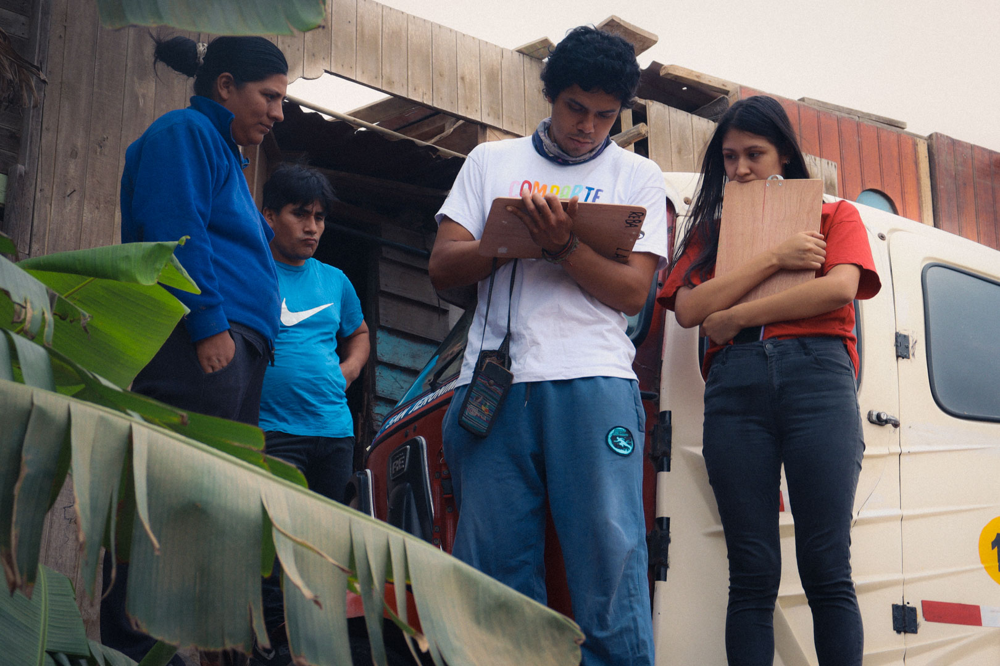
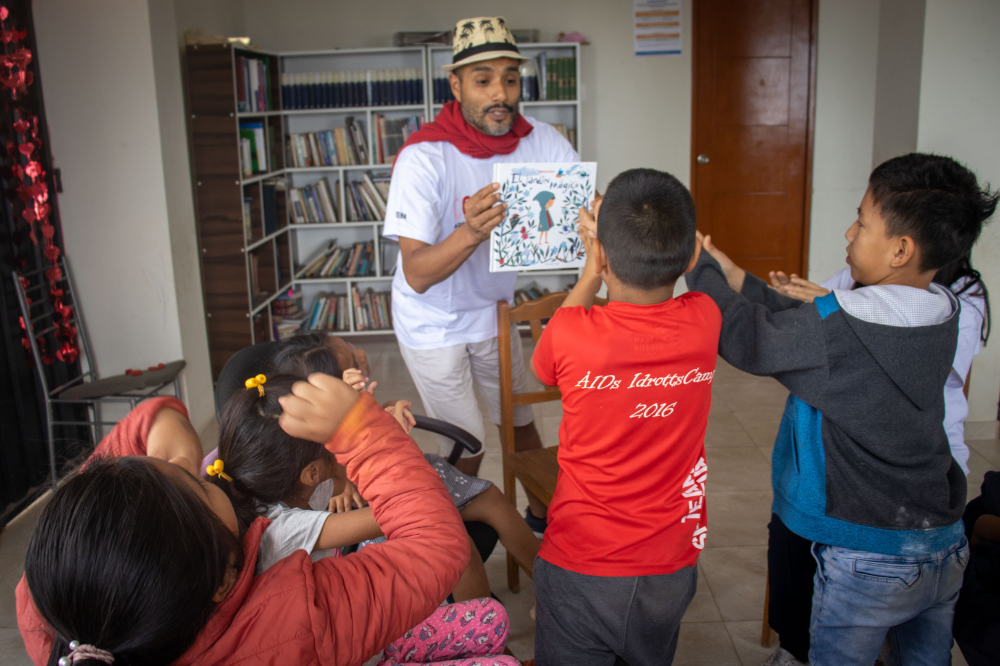
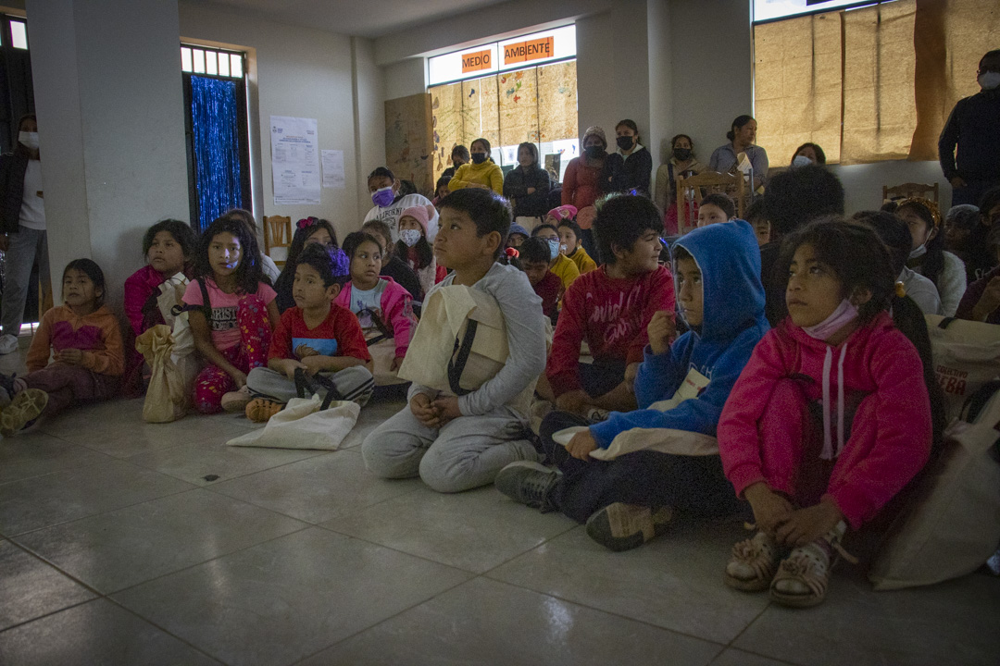
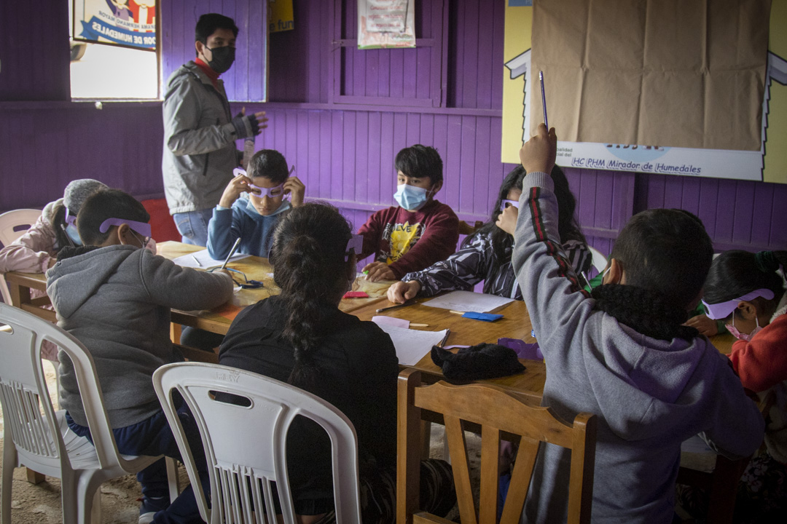
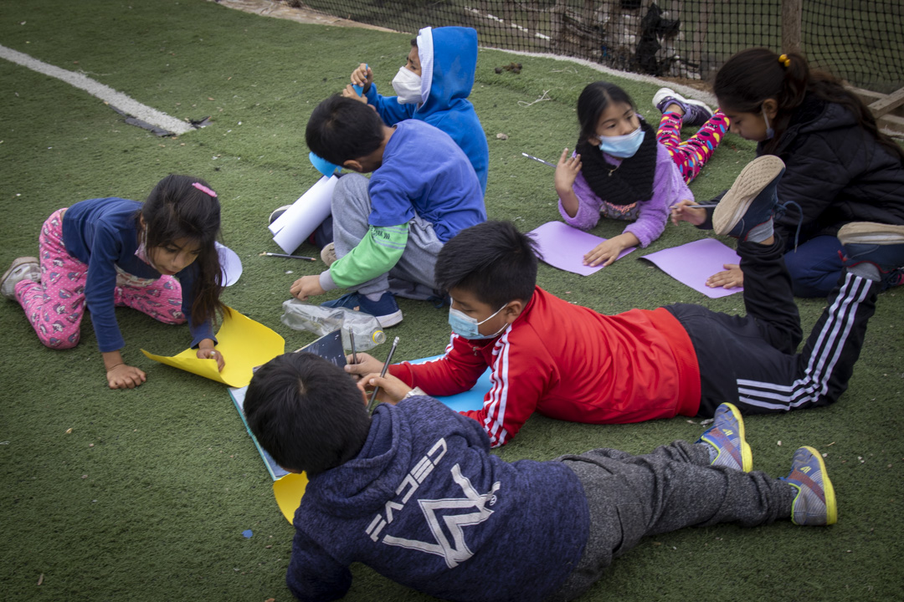
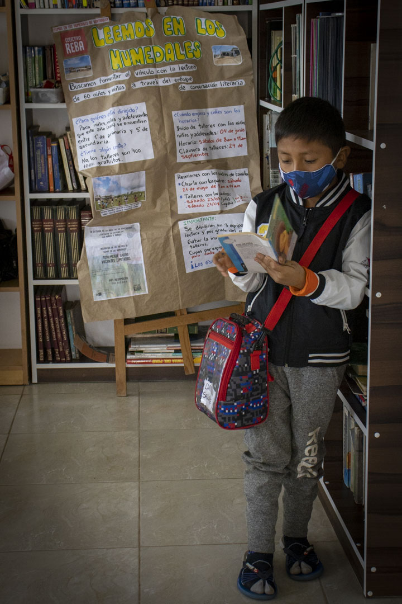
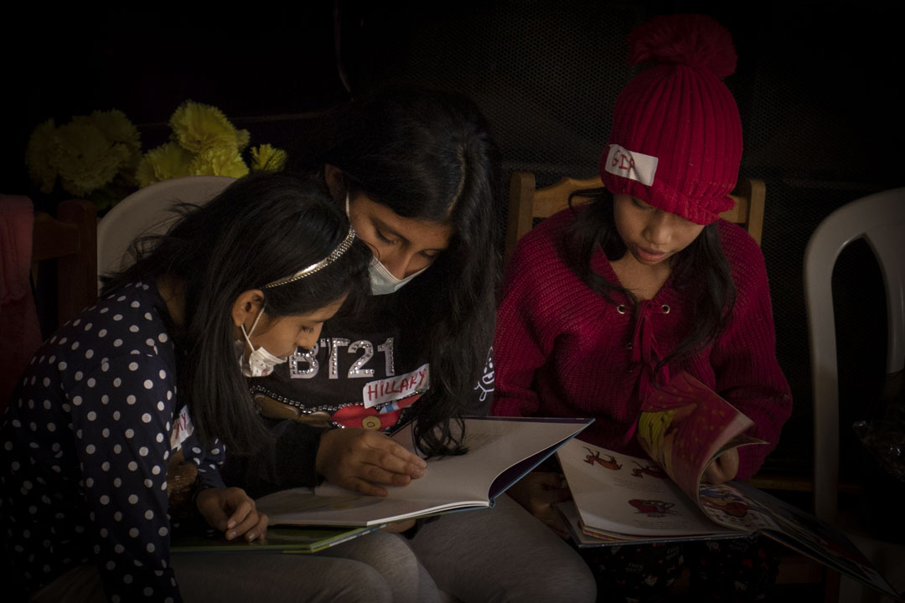
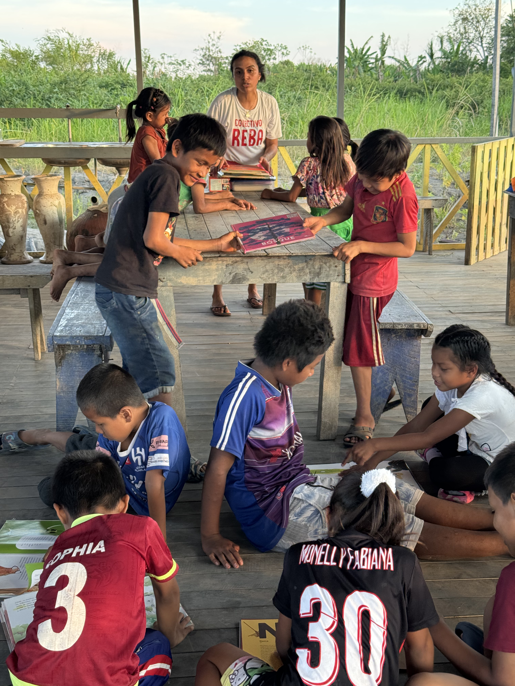
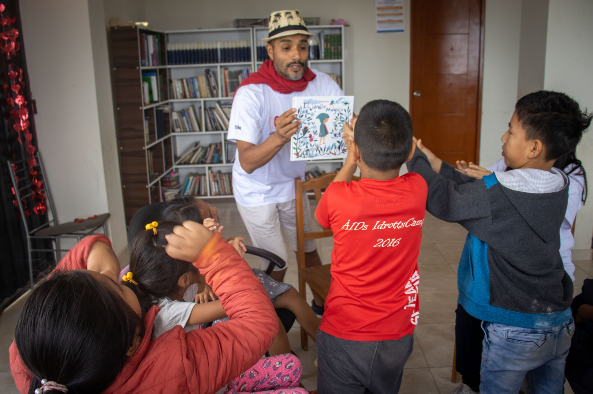
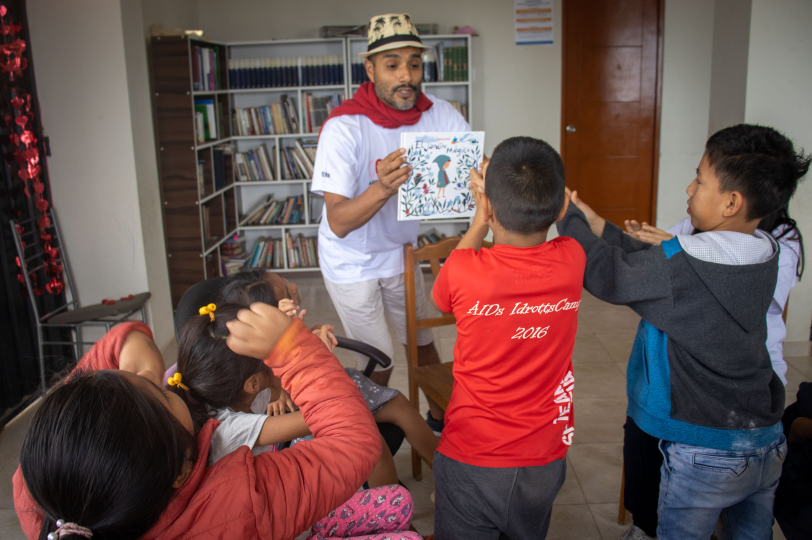

A través de este programa fomentamos el acceso al ejercicio del derecho a la
lectura en zonas rurales como: Huacho (Oyón, Lima); “Las Brisas de Abancay” (Ucayali); distrito
de Obrajillo (Canta, Lima); y San Pedro de Casta (Huarochirí, Lima). En los años que venimos
desarrollando este programa hemos compartido con más de 500 niñas, niños y adolescentes.
Escribimos en los humedales (2023)
En este proyecto fomentamos la conversación literaria y escritura alrededor de
la reflexión sobre el cuidado del medio ambiente y la interculturalidad, para la creación de
libros cartoneros por parte de 75 niñas, niños y adolescentes del AA.HH. “El mirador de los
humedales” (Ventanilla, Callao). El préstamo de libros a domicilio fue un servicio con alta
demanda.


Leemos en los humedales (2022)
A través de este proyecto fortalecimos la reflexión y conversación literaria
mediación de lectura a través de libros que promueven la reflexión sobre la igualdad de género,
el bien común, la interculturalidad y el cuidado del medio ambiente con 60 niñas, niños y
adolescentes del AA.HH. “El mirador de los humedales” (Ventanilla, Callao). El alto nivel de
demanda de préstamos de libros a domicilio, superó las expectativas.



Biblioteca itinerante
Colectivo REBA cumple el rol de biblioteca itinerante al compartir
experiencias lectoras en comunidades rurales y periféricas que carecen de acceso al ejercicio de
su derecho a la lectura y a la cultura con niñas, niños y adolescentes.



Biblioteca virtual
Con material seleccionado de acorde a los paradigmas educativos de REBA.
Disponible aquí:


 
